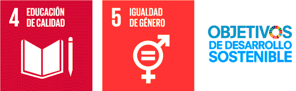
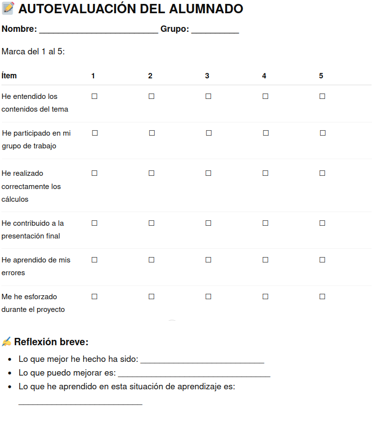

Justificación didáctica
Esta situación de aprendizaje se enmarca en el desarrollo del sentido matemático del alumnado de 4º de ESO a través del estudio de las potencias, raíces y logaritmos, integrados en un contexto significativo y motivador. La propuesta se articula mediante un enfoque competencial y metodologías activas, con especial énfasis en el Aprendizaje Basado en Proyectos (ABP), la investigación guiada y la gamificación, favoreciendo la construcción progresiva del conocimiento y su transferencia a situaciones reales.
Desde la perspectiva de los principios pedagógicos establecidos en la LOMLOE, esta situación de aprendizaje responde a los siguientes planteamientos:
- Enfoque competencial del aprendizaje, ya que el alumnado no se limita a la adquisición de contenidos matemáticos, sino que los aplica en contextos reales y funcionales, desarrollando la capacidad de interpretar, modelizar, resolver problemas y comunicar soluciones.
- Aprendizaje significativo y funcional, al partir de situaciones contextualizadas (crecimiento exponencial, escalas científicas, aplicaciones tecnológicas y económicas) que conectan los saberes matemáticos con la realidad del alumnado, favoreciendo la comprensión profunda y la utilidad del conocimiento.
- Atención a la diversidad y personalización del aprendizaje, mediante el trabajo cooperativo en grupos heterogéneos con roles definidos, la flexibilización de tareas y la posibilidad de distintos niveles de desempeño dentro de un mismo producto final.
- Aprendizaje activo y participativo, donde el alumnado es protagonista de su proceso de aprendizaje, investigando, tomando decisiones, resolviendo problemas y construyendo productos propios, mientras el docente actúa como guía y facilitador.
- Evaluación formativa y continua, integrando la autoevaluación, la coevaluación y la evaluación del docente, así como el uso de rúbricas, lo que permite al alumnado reflexionar sobre su propio proceso de aprendizaje, identificar errores y mejorar de manera progresiva.
- Desarrollo de la competencia digital, mediante el uso de herramientas digitales para la búsqueda de información, la elaboración de presentaciones y la comunicación de resultados, fomentando una ciudadanía digital crítica, responsable y ética.
- Educación emocional y desarrollo personal, al incorporar dinámicas que fomentan la gestión del error como oportunidad de aprendizaje, la perseverancia, la motivación intrínseca y la autoconfianza en la resolución de problemas matemáticos.
- Trabajo cooperativo y socialización del aprendizaje, promoviendo la interacción entre iguales, la toma de decisiones compartida, la responsabilidad individual dentro del grupo y la resolución dialogada de conflictos.
En cuanto a la contribución a los Objetivos de Desarrollo Sostenible (ODS), esta situación de aprendizaje se vincula especialmente con:
- ODS 4: Educación de calidad, al promover un aprendizaje inclusivo, equitativo y de calidad, basado en metodologías activas que fomentan la comprensión significativa, la participación del alumnado y el desarrollo de competencias clave para la vida.
- ODS 5: Igualdad de género, mediante la visibilización del papel de la matemática Maria Gaetana Agnesi, contribuyendo a romper estereotipos de género en la ciencia y promoviendo referentes femeninos en la historia de las matemáticas.

En conjunto, esta situación de aprendizaje combina rigor matemático, contextualización real, enfoque competencial y motivación narrativa, favoreciendo un aprendizaje profundo, funcional y transferible, alineado con los principios de la LOMLOE y con una educación orientada a la ciudadanía crítica, inclusiva y sostenible.
Producto final: Logarithm Prime – El Poder de las Bases
El producto final de la situación de aprendizaje es la creación de un informe/presentación digital en grupo titulado “Logarithm Prime”.
📌 Descripción del producto
El alumnado, organizado en grupos heterogéneos, deberá:
- Seleccionar 3 situaciones de la vida real donde aparezcan potencias, raíces o logaritmos.
- Explicar cada situación mediante:
- Descripción del contexto
- Modelización matemática
- Resolución paso a paso
- Interpretación final
- Presentar el trabajo en formato digital (Google Slides, Canva o Genially).
- Exponer oralmente el resultado al grupo clase.
🎯 Finalidad
- Aplicar los contenidos matemáticos a situaciones reales.
- Comunicar razonamientos matemáticos con precisión.
- Trabajar de forma cooperativa con roles definidos.
- Integrar competencia digital y comunicación matemática.
Temporización
La situación de aprendizaje se desarrolla a lo largo de 12 sesiones distribuidas de la siguiente forma:
🧠 1. Motivar (1/2 sesión)
- Presentación de la narrativa del universo Transformers y del reto “Logarithm Prime”.
- Activación de la curiosidad y detección de ideas previas sobre energón, crecimiento y potencias.
🔍 2. Activar (1/2 sesión)
- Actividades de recuperación de conocimientos previos sobre potencias y raíces.
- Problemas sencillos de identificación de patrones.
🔎 3. Explorar (2 sesiones)
- Análisis de patrones de crecimiento del energón.
- Problemas inversos y descubrimiento guiado de relaciones exponenciales.
- Introducción informal a la necesidad de los logaritmos.
🧠 4. Estructurar (5 sesiones)
- Explicación guiada del profesor:Potencias
- Raíces
- Logaritmos
- Propiedades de los logaritmos
- Operaciones con logaritmos
- Elaboración del “Manual de uso del energón”
- Práctica guiada y ejercicios del libro + Classroom.
🚀 5. Aplicar (2 sesiones)
- Desarrollo del proyecto ABP: “Creamos el Logarithm Prime”.
- Resolución de 3 situaciones reales con potencias, raíces y logaritmos.
- Elaboración de presentación digital en grupo.
🏁 6. Concluir (2 sesión)
- Exposiciones orales “El Alto Consejo Autobot”.
- Coevaluación con rúbrica.
- Prueba escrita final: “¡Autobots a examen!”
Rúbrica de evaluación del profesorado
| 5. Excelente | 4. Notable | 3. Adecuado | 2. Básico | 1. Insuficiente | |
|---|---|---|---|---|---|
| 1.1. Reformular problemas matemáticos de forma verbal y gráfica, interpretando los datos, las relaciones entre ellos y las preguntas planteadas. | Reformula el problema de forma precisa y rigurosa, utilizando representaciones verbales y gráficas que facilitan plenamente su comprensión. (2.0) | Reformula el problema con claridad, utilizando representaciones verbales y gráficas adecuadas. (1.5) | Reformula el problema de manera comprensible e identifica los datos y relaciones principales. (1.0) | Identifica algunos datos relevantes, pero presenta dificultades para interpretar las relaciones entre ellos y reformular el problema. (0.5) | No identifica correctamente los datos ni comprende la pregunta planteada. (0.1) |
| 1.2. Analizar y seleccionar diferentes herramientas y estrategias elaboradas en la resolución de un mismo problema, valorando su eficiencia. | Analiza críticamente distintas estrategias y selecciona de forma autónoma la más eficaz y adecuada. (2.0) | Compara varias estrategias y elige la más eficiente justificando su elección. (1.5) | Selecciona estrategias adecuadas y reconoce de forma básica su utilidad. (1.0) | Aplica una estrategia simple con ayuda, sin valorar su eficacia. (0.5) | No selecciona estrategias adecuadas o utiliza procedimientos incorrectos. (0.1) |
| 1.3. Obtener todas las posibles soluciones matemáticas de un problema movilizando los conocimientos necesarios, analizando los resultados y reconociendo el error como parte del proceso, utilizando herramientas tecnológicas adecuadas. | Resuelve con precisión todas las situaciones, interpreta críticamente los resultados y utiliza con autonomía herramientas tecnológicas, incorporando el error como oportunidad de mejora. (2.0) | Obtiene soluciones correctas, analiza resultados y utiliza adecuadamente herramientas tecnológicas. (1.5) | Resuelve correctamente la mayoría de las situaciones y revisa sus resultados. (1.0) | Obtiene soluciones parciales con ayuda y corrige algunos errores. (0.5) | No obtiene soluciones correctas o abandona ante los errores. (0.1) |
| 2.2. Justificar las soluciones óptimas de un problema, evaluándolas desde diferentes perspectivas (matemática, de género, de sostenibilidad, de consumo responsable, etc.). | Justifica rigurosamente la solución integrando de forma crítica perspectivas matemáticas, sociales, de género y sostenibilidad. (2.0) | Justifica la solución considerando, además, alguna perspectiva social o ética. (1.5) | Justifica correctamente la solución desde la perspectiva matemática. (1.0) | Justifica de forma muy simple y superficial. (0.5) | No justifica las soluciones obtenidas. (0.1) |
| 6.3. Valorar la aportación de las matemáticas al progreso de la humanidad y su contribución en la superación de los retos que demanda la sociedad actual, identificando algunas aportaciones hechas desde nuestra comunidad. | Analiza de forma reflexiva y fundamentada la importancia de las matemáticas, incluyendo referencias históricas y aportaciones como las de John Napier y Maria Gaetana Agnesi. (2.0) | Valora con claridad la contribución de las matemáticas al desarrollo científico y social. (1.5) | Reconoce y explica algunas aportaciones relevantes de las matemáticas. (1.0) | Identifica ejemplos muy básicos de su utilidad. (0.5) | No reconoce la importancia de las matemáticas en la sociedad. (0.1) |
| 7.1. Representar matemáticamente la información más relevante de un problema, conceptos, procedimientos y resultados matemáticos, visualizando ideas y estructurando procesos matemáticos. | Representa de forma excelente y muy visual la información, facilitando la comprensión del proceso y de los resultados. (2.0) | Utiliza representaciones claras, ordenadas y bien estructuradas. (1.5) | Representa correctamente la información esencial del problema. (1.0) | Presenta representaciones incompletas o con errores. (0.5) | No utiliza representaciones matemáticas adecuadas. (0.1) |
| 8.2. Reconocer y emplear el lenguaje matemático presente en la vida cotidiana y en diversos contextos comunicando mensajes con contenido matemático con precisión y rigor. | Comunica con gran rigor y precisión, adaptando el lenguaje matemático a distintos contextos y destinatarios. (2.0) | Comunica con claridad, precisión y corrección matemática. (1.5) | Utiliza adecuadamente el lenguaje matemático en la mayoría de las situaciones. (1.0) | Emplea algunos términos matemáticos, aunque con errores o falta de claridad. (0.5) | Utiliza el lenguaje matemático de forma incorrecta o imprecisa. (0.1) |
- Actividad
- Nombre
- Fecha
- Puntuación
- Notas
- Reiniciar
- Imprimir
- Aplicar
- Ventana nueva
Rúbrica de coevaluación del alumnado
| 4 Excelente | 3 Satisfactorio | 2 Mejorable | 1 Insuficiente | |
|---|---|---|---|---|
| Habla | Habla despacio y con gran claridad. (4) | La mayoría del tiempo, habla despacio y con claridad. (3) | Unas veces habla despacio y con claridad, pero otras se acelera y se le entiende mal. (2) | Habla rápido o se detiene demasiado a la hora de hablar. Además su pronunciación no es buena. (1) |
| Vocabulario | Usa vocabulario apropiado para la audiencia. Aumenta el vocabulario de la audiencia definiendo las palabras que podrían ser nuevas para ésta. (4) | Usa vocabulario apropiado para la audiencia. Incluye 1-2 palabras que podrían ser nuevas para la mayor parte de la audiencia, pero no las define. (3) | Usa vocabulario apropiado para la audiencia. No incluye vocabulario que podría ser nuevo para la audiencia. (2) | Usa varias (5 o más) palabras o frases que no son entendidas por la audiencia. (1) |
| Volumen | El volumen es lo suficientemente alto para ser escuchado por todos los miembros de la audiencia a través de toda la presentación. (4) | El volumen es lo suficientemente alto para ser escuchado por todos los miembros de la audiencia al menos 90% del tiempo. (3) | El volumen es lo suficientemente alto para ser escuchado por todos los miembros de la audiencia al menos el 80% del tiempo. (2) | El volumen con frecuencia es muy débil para ser escuchado por todos los miembros de la audiencia. (1) |
| Comprensión | El estudiante puede con precisión contestar casi todas las preguntas planteadas sobre el tema por sus compañeros de clase. (4) | El estudiante puede con precisión contestar la mayoría de las preguntas planteadas sobre el tema por sus compañeros de clase. (3) | El estudiante puede con precisión contestar unas pocas preguntas planteadas sobre el tema por sus compañeros de clase. (2) | El estudiante no puede contestar las preguntas planteadas sobre el tema por sus compañeros de clase. (1) |
| Postura del cuerpo y contacto visual | A la hora de hablar la postura y el gesto son muy adecuados. Mira a todos los compañeros con total naturalidad. (4) | La mayoría del tiempo la postura y el gesto son adecuados y casi siempre mira a los compañeros mientras habla. (3) | Algunas veces, mantiene la postura y el gesto adecuados, y otras no. En ocasiones mira a sus compañeros. (2) | No mantiene la postura y gesto propios de una exposición oral y, la mayoría de las veces, no mira a sus compañeros. (1) |
| Contenido | Demuestra un completo entendimiento del tema que expone. (4) | Demuestra un buen entendimiento del tema que expone. (3) | Demuestra un buen entendimiento de partes del tema que expone. (2) | No parece entender muy bien el tema que expone. (1) |
- Actividad
- Nombre
- Fecha
- Puntuación
- Notas
- Reiniciar
- Imprimir
- Aplicar
- Ventana nueva
Formulario de autoevaluación para el alumnado

♿ Principios DUA aplicados
Esta situación de aprendizaje se diseña siguiendo los principios del Diseño Universal para el Aprendizaje (DUA), garantizando la accesibilidad, participación y progreso de todo el alumnado:
🎯 1. Múltiples formas de implicación
- Uso de narrativa motivadora (Transformers) para aumentar la motivación.
- Trabajo cooperativo con roles diferenciados.
- Actividades contextualizadas y significativas.
- Gamificación para fomentar la participación activa.
🧠 2. Múltiples formas de representación
- Explicaciones orales del docente combinadas con materiales escritos.
- Uso de representaciones simbólicas, gráficas y digitales.
- Ejemplos progresivos desde lo concreto a lo abstracto.
- Manual del energón como organizador visual del aprendizaje.
🛠️ 3. Múltiples formas de acción y expresión
- Presentaciones orales en grupo.
- Producción escrita individual (Agnesi y Napier).
- Uso de herramientas digitales (Canva, Genially, Slides).
- Resolución de problemas de diferentes niveles de complejidad.
♿ Atención a la diversidad
La situación de aprendizaje se diseña bajo un enfoque inclusivo, garantizando la participación de todo el alumnado mediante:
- Grupos heterogéneos, favoreciendo el aprendizaje entre iguales.
- Asignación de roles dentro del equipo para equilibrar la participación.
- Andamiaje progresivo, especialmente en la fase de estructuración.
- Actividades multinivel, permitiendo diferentes grados de dificultad en la resolución de problemas.
- Apoyo visual y esquemático, facilitando la comprensión de contenidos abstractos.
- Flexibilidad en la expresión, permitiendo distintas formas de presentar el conocimiento (oral, escrita, digital).
- Evaluación continua y formativa, con especial peso del proceso frente al resultado final.
- Normalización del error como parte del aprendizaje, especialmente en la gestión emocional.
Este enfoque permite atender a distintos ritmos de aprendizaje, estilos cognitivos y necesidades educativas, favoreciendo la equidad y la participación efectiva de todo el alumnado.